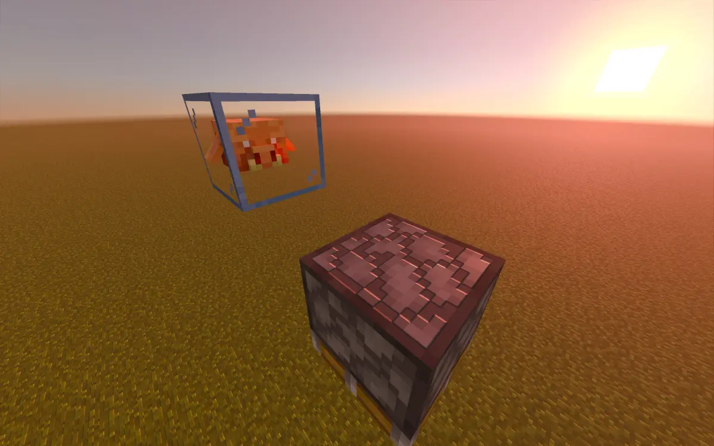
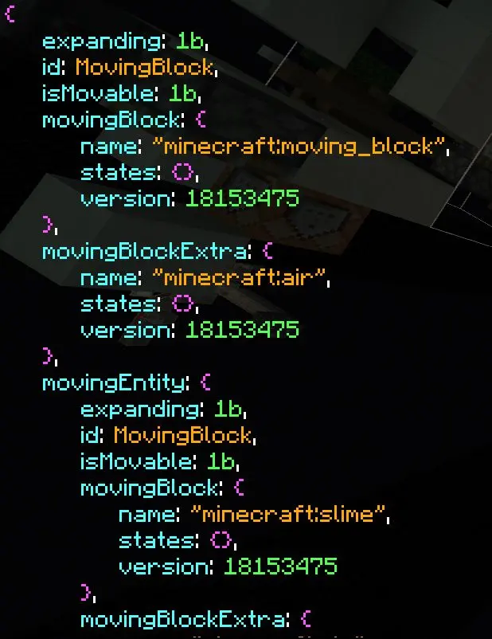
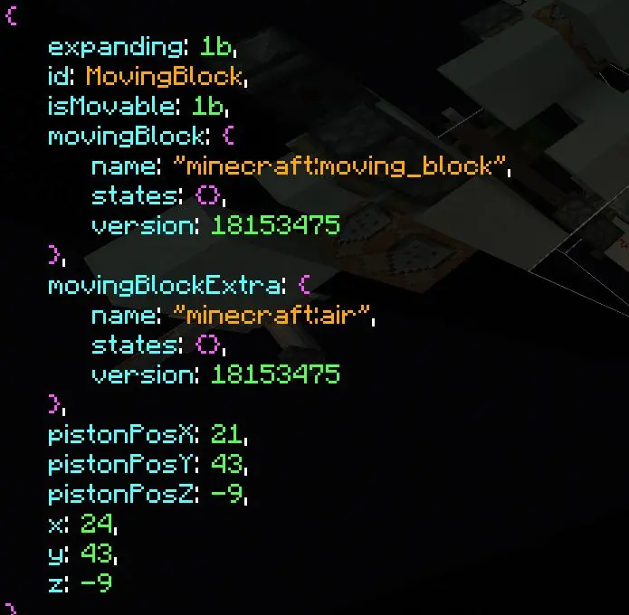
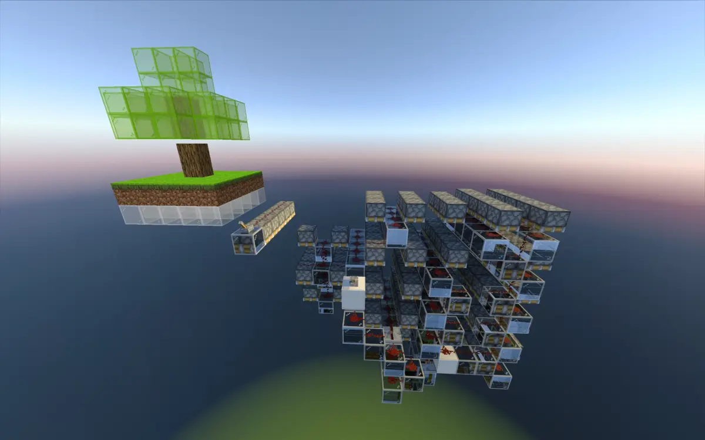
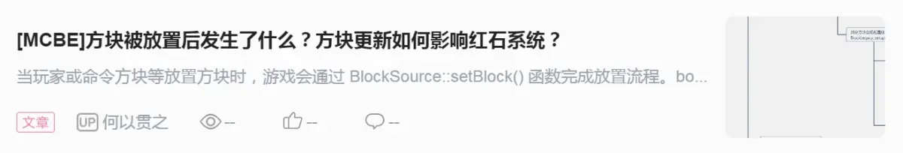
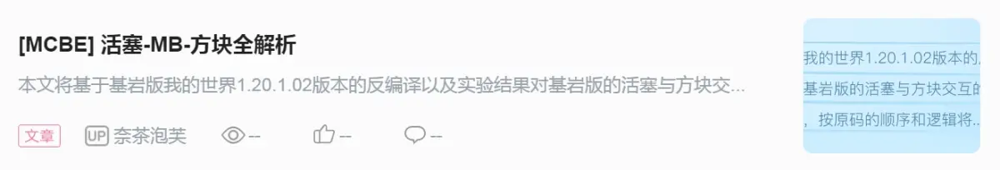

方块替换中方块和方块实体的变化解析
本篇专栏偏重于解释在方块替换中方块和方块实体的变化，以及利用这些变化的相关应用，基本不涉及红石系统
extrablock:被包含的方块
setblock:放置方块
pos：方块坐标
block：方块对象
blockEntity或blockactor: 方块实体
subchunk:子区块
blockonplace:要放置的方块
函数onremove
LevelChunk::_removeCallbacks( LevelChunk *this, const struct ChunkBlockPos *chunkpos, const struct Block *block, const struct Block *blockonplace, struct BlockSource *blocksource)：
先判断如果要放置的方块的方块实体和原位置的一不一样，如果不一样就删除原来的实体，
然后调用原位置方块的onremove函数，处理被删除的事件
函数placecallbacks
LevelChunk::placeCallbacks( __int64 this, unsigned __int8 *chunkPos_, gsl::details *block, Block *blockOnPlace, BlockSource *blocksource, __int64 blockactor)：
检测放置的方块
如果放置的方块是：
空气
没方块实体
不存在
原位置有方块
以上条件只需要满足一个
同时满足原位置方块的方块实体和新放置的一样
就不会放置新的方块实体
否则放置方块实体，
并处理放置后的事件，
比如加入随机刻列表，方块实体列表等
函数levelchunk_setblock
LevelChunk::setBlock( BlockTickingQueue **this, struct ChunkBlockPos *chunkPos, gsl::details **blockOnPlace, struct BlockSource *blocksource, _QWORD *blockactor)：
会检测要放置的方块和原位的方块是不是一样的，如果不是的话，先检查子区块的位置（也就是世界坐标）然后是放置方块位置的y坐标，
检测要放置的方块blocklegacy和原位置一不一样
：
如果要放置的方块blocklegacy和原位置上的一样，
就不会删除原位方块实体和调用onremove
然后调用onremore函数和删除方块实体，并处理方块被删除时的事件
如果要放置的方块的blocklegacy和原位置上的不一样，就将原位置的blocklegacy设置成新的，
接下来检测原位置的方块是否可以成为extrablock,如果可以就让它变成extrablock(比如往一个水里放置活塞，活塞会直接含水,这时水就是活塞的extrablock)
放置extrablock
真正放置下方块
（这里会判断原位置的方块能不能变成extrablock，也就是原位置的方块能不能被新放的方块包含，
如果可以就把原位置的方块设置成extrablock，
如果不能就不执行放置，将extrablock设置成空气再放置）
(如果要放置的方块是空气，就把这个位置的extrablock设置成空气然后去放置)
更新光照
然后是放置方块实体
好了，
接下来就可以解释一下一些“魔法”背后的原理了
经典的mb保留手段的原理
（一个活塞推出之后，在mb转b之前，如果将这个活塞setblock成一个别的方向的活塞，活塞不会将mb转b，而且mb不会自己转b，会一直存在下去）
:
首先我们要知道活塞的onremove函数会调用spawnblocks函数，将推出的mb都转b
在原活塞推出，mb转b之前，原活塞被setblock一个不同方向的活塞时，
原活塞会被设置成空气，变成extrablock，但原位方块实体不会被删除，并且不会调用onremove函数（这里是因为原位置活塞被重新放置成新的方向的活塞,blocklegacy是一样的，导致原活塞方块实体不会被删除，也不会调用onremove函数）
而mb转b，需要调用spawnblocks函数，如果活塞不调用它的onremove函数，也就无法调用spawnblocks函数

mb的mb
：
就是放置时先把方块实体的指针赋值给另一个变量，
然后把mb方块实体原本指向方块实体的指针清空，
把另一个指针传入levelchunk::setblock里面放置方块
但是mb的blocklegacy和原位的mb相同，所以跳过了删除原位方块实体
导致mb放置了一个mb，
但是那个mb仍然记录着一个mb，但是方块实体的指针被清空了，所以变成了一个记录没有方块实体的mb的mb
然后由于movingblockactor::tick的特性，
mb会在下一次被tick的时候将里面记录的mb变成空气，
空气转b
变成了空气


mba（movingblockactor）套娃
：
当一个含有mb方块实体的方块被制作无限方块时，
在这个含有mb方块实体的方块转b的时候，
由于setblock时原位的方块实体（mb）和要放置的方块实体（mb）属于同一类（19LL），新的方块实体就放不出来了
导致做不了无限方块的无限方块，
但是可以在它转b之前重复操作制作无限方块，使mb方块实体层层堆叠，形成一个链表式的结构
在渲染的时候，
通过mb方块实体内部保存的其它mb方块实体指针传递，导致层层渲染，达到彩色显示的效果

笔者：@樱银音
代码分析：@奈茶泡芙
相关专栏：

站内专栏 »
B 站专栏 »